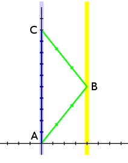
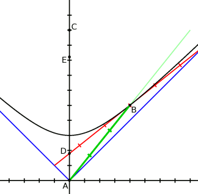

Парадокс близнецов
Рассматривая специальную теорию относительности, невозможно обойти вниманием знаменитый парадокс близнецов.
Парадокс: на земле живут два брата-близнеца. Один из них отправляется в далёкое космическое путешествие на корабле, способном развивать околосветовые скорости. Второй остаётся дома. Когда брат-космонавт возвращается на землю, браться обнаруживают, что брат-домосед состарился гораздо сильнее, чем брат-космонавт.
Парадокс состоит в том, что (казалось бы) с точки зрения космонавта, домосед двигался с околосветовой скоростью и должен был остаться молодым.
Давайте разберёмся.
Точка зрения близнеца-домоседа
С точки зрения близнеца-домоседа события разворачивались так, как показано на рисунке.

Здесь голубой линией показана мировая линия земли, жёлтой линией — линия далёкой звезды (предположим, что звезда и земля покоятся). Тёмно-синей линией показана мировая линия брата-домоседа, он проходит путь A-C по прямой. Зелёной линией показана мировая линия брата-космонавта, он проходит из A в C по ломаной A-B-C.
Давайте придерживаться тех же обозначений и единиц измерения, что и ранее. Тогда из рисунка вы можете видеть, что для близнеца-домоседа прошло 10 секунд, за это время близнец-космонавт долетел до звезды, находящейся на расстоянии 4 единицы (то есть 4·c = 4·299,792,458 = 1,199,169,832 метров), там он развернулся и сразу же пустился в обратный путь.
Пользуясь выражением для интервала, вы можете легко убедиться, что оба перелёта брата-космонавта продолжались по три секунды (по часам брата-космонавта).
Таким образом космонавт состарился на 6 секунд, а домосед — на 10.
Действительно, пространство-время устроено так, что прямой путь из A с С оказывается длиннее, чем не прямой A-B-C. Это на прямую связано со знаком «-» в выражении для интервала. Если вы внимательно читали все мои предыдущие заметки, то понимание этого факта не должно вызвать у вас больших затруднений.
Но если все инерциальные системы отсчёта эквивалентны, то оба близнеца должны состариться одинаково? Когда же успел состариться близнец-домосед?
Давайте посмотрим на происходящее глазами брата-космонавта.
Точка зрения близнеца-космонавта
Итак рассмотрим сперва полёт до звезды.
На следующем рисунке показана мировая линия близнеца-космонавта и его одновременное пространство на момент прилёта на далёкую звезду (точка B).

Как видите, в пространстве брата-космонавта брат-домосед состарился меньше, чем на две секунды. То есть пока всё правильно — близнец-домосед состарился меньше, чем космонавт (с точки зрения космонавта).
Но вот близнец-космонавт пускается в обратный путь:
Через точки B и E проходит одновременное пространство брата-космонавта на момент начала его обратного пути. Как видите, за время, пока космонавт разворачивал свой корабль, домосед сильно постарел (с точки зрения брата-космонавта). В момент прилёта близнеца-космонавта в точку B домоседу ещё не исполнилось две секунды, но в момент отлёта из B домоседу было уже более восьми. То есть близнец-домосед состарился в то время, пока близнец-космонавт разворачивал свой корабль.
На самом деле, близнец-космонавт конечно не мог развернуть свой корабль мгновенно, поэтому и домосед для него не состарился моментально. Но старение домоседа (с точки зрения космонавта) происходило именно в момент разворота корабля.
Теперь понятно, чем отличаются братья-близнецы. Домосед двигался всё время с одной и той же скоростью (покоился), а космонавт изменял скорость и описывал в пространстве-времени ломаные. Поэтому в их системах отсчёта прошло разное время.